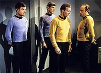
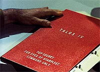
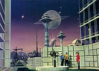
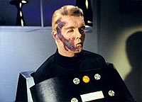
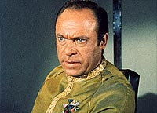
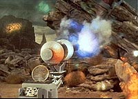
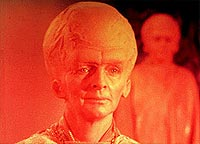
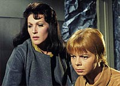
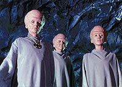
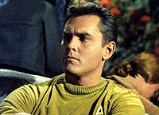

|
MANCHETE
DO EPISÓDIO
Economia
pauta 'episódio dentro de
episódio' com resultado muito bom
Episódio
anterior | Próximo episódio
Sinopse:
Data Estelar: 3012.4.
A USS Enterprise chega à Base Estelar 11, atendendo a um suposto chamado de Christopher Pike, ex-capitão da nave e de quem James Kirk recebeu o comando. Entretanto, ao chegar ao local, Kirk e
cia. descobrem que não houve chamado algum e que Pike se encontra
inválido devido a um acidente (ele está confinado a uma espécie de cadeira de rodas futurística, podendo apenas dizer "sim" ou
"não", através de uma lâmpada do painel de tal aparelho), sem condições de ter enviado a suposta comunicação.
 Spock, que mais tarde descobre-se ter sido o "autor" da mensagem misteriosa, falsifica uma mensagem e a envia a Enterprise que está em órbita, mensagem esta que inclui um novo curso a ser automaticamente seguido pela nave e ordens do comando da Frota Estelar para que a tripulação mantenha segredo sobre tais acontecimentos. Enquanto Kirk e Mendez conversam sobre Talos IV, um planeta proibido para todas as naves da Frota Estelar (a violação de tal diretriz implica
a única pena de morte da lei da Federação), Spock assume o comando da nave (como parte de tais "ordens do comando") traz Pike a bordo e após trazer também McCoy (que é convencido de toda esta encenação por uma mensagem falsificada --por Spock-- de Kirk), parte com a nave (para Talos
IV), deixando Kirk para traz.
Kirk, em uma nave auxiliar e acompanhado pelo comodoro Mendez, comandante da
Base Estelar 11, parte atrás da Enterprise e Spock ignora todas as tentativas de comunicação do seu capitão e permanece em seu curso até que a nave perseguidora
fica sem combustível. Spock é obrigado então a retroceder (não restava muito ar para Kirk), confessando a McCoy não ter recebido ordens da Frota para assumir o
comando, e é confinado aos seus aposentos. Quando Kirk e Mendez chegam a bordo, descobrem que os sistemas da nave estão travados e que
ela segue em direção a Talos IV, sem que possam fazer algo a
respeito.
 Spock se recusa a destravar os sistemas e Mendez e Kirk iniciam uma audiência, mas a pedido do próprio Spock uma corte marcial é
iniciada. Nela, a nave começa a receber transmissões (depois descobertas) provenientes de Talos IV, mostrando uma das missões da Enterprise sob comando de Pike. Missão da época em que Spock ainda servia ao seu antigo capitão.
As imagens mostram como treze anos antes a Enterprise interceptou um pedido de ajuda de uma antiga nave terrestre, a SS Columbia, enviado dezoito anos antes daquela época. Respondendo ao pedido a Enterprise chega a Talos IV e encontra um grupo de sobreviventes, mas logo depois estes (e o seu acampamento inteiro) desaparecem (exceto uma bela mulher de nome Vina) e Pike é seqüestrado por Talosianos, supostamente capazes de produzir as mais realistas e sofisticadas ilusões já registradas, com seus poderes telepáticos. Durante a
corte marcial a Enterprise recebe uma mensagem do comando da Frota informando que Kirk foi afastado do comando (devido
às comunicações detectadas com Talos IV) e dando ordens a Mendez de assumir o comando da nave.
 A transmissão prossegue, apesar dos protestos de Mendez, mostrando os detalhes do incidente envolvendo Pike, como ele descobriu e frustrou os planos dos nativos de Talos IV que queriam mantê-lo cativo junto com a única real sobrevivente da SS Columbia, Vina, para repovoar o seu mundo estéril no melhor estilo "Adão e Eva".
A Enterprise chega a Talos IV e então Kirk descobre que a corte marcial, a presença de Mendez a
bordo e tudo o mais foi apenas um truque criado pelos Talosianos para permitir que Spock levasse Pike a Talos IV sem que Kirk fosse envolvido no problema diretamente.
 A Enterprise recebe nova mensagem da Frota Estelar, agora do próprio comodoro Mendez, informando que as restrições de acesso ao planeta ficavam suspendidas temporariamente devido
à "importância histórica de Pike" e dando permissão ao inválido capitão que fosse transportado para lá, onde viveria o resto de seus dias com Vina, como o homem que era anos atrás. Uma ilusão mais gentil que a insuportável existência que estava levando. Algo que Spock devia ao seu velho comandante.
Comentários:
"The Menagerie" é um episodio surgido da principal mãe das invenções, a economia. Com o piloto original da série,
"The Cage", Gene Roddenberry tinha em mãos um
episódio inteiro, de boa qualidade e inédito, porém com uma tripulação totalmente diferente da que ficou conhecida como a tripulação da
Série Clássica. Ele certamente deve ter se perguntado o que fazer com aquele material. A resposta foi este episódio em duas partes, que provou ter sido uma excelente idéia para aproveitar o piloto recusado pela rede NBC para a idéia inicial de
Jornada nas Estrelas. A grande qualidade de "The
Cage" ajuda muito na tarefa e as escolhas dos elementos para tornar
"The Menagerie" um episódio de igual qualidade foram muito felizes.
 Em primeiro lugar, uma parte
crítica deste tipo projeto é fazer com que as seqüências (da missão da Enterprise em Talos IV, vista em
"The Cage") em "flashback" funcionem sem quebrar o ritmo do
episódio, o que o tornaria cansativo. Aqui isso não acontece, primeiro porque a trama que envolve Pike e sua tripulação é legitima e não uma invenção tola qualquer para manter parte do elenco ocupado, o que garante interesse pelos eventos em Talos. Segundo porque a marcação feita pelos eventos relacionados à corte marcial tem o "timing" correto para que
esse interesse seja mantido.
O espectador passa então a ser conduzido por uma dupla curiosidade, saber o que aconteceu em Talos IV anos antes, e por conseqüência, quais as motivações que levaram Spock a agir de forma tão extrema.
Nesse ponto, embora a personalidade do Vulcano tenha sido um elemento fortemente trabalhado nos episódios anteriores, os diálogos de Kirk com o comodoro
Mendez e logo depois de McCoy com Kirk sobre o caráter do primeiro-oficial da Enterprise, sempre reafirmando a sua honestidade e lealdade
têm a clara intenção de agir como elemento catalisador do que virá no decorrer
"The Menagerie", deixando claro para todos que aquela forma de agir era totalmente antinatural para Spock e aumentando mais ainda a curiosidade sobre o
"Por quê?".
 A resposta a este
"Por quê?" é particularmente interessante. Em "The
Cage" --ou no passado, como queiram-- há uma cena onde Pike queixa-se a Boyce sobre estar sentindo o peso da responsabilidade e de como gostaria de largar o comando e a Frota Estelar e trocar por uma vida pacata, sem muitas responsabilidades. Depois, quando é capturado pelos Talosianos, é exatamente
isso que lhe é oferecido, e mais, como o próprio Pike disse, toda uma galáxia de coisas para fazer
à sua disposição, mas ele então resiste, uma vez que o preço seria alto demais, julgava ele. Estas passagens são fundamentais para compreensão do propósito de
"The Cage".
Mas no fim de tudo, em "The Menagerie", Pike retorna a Talos e aceita de bom grado viver dentro de uma ilusão com Vina. O que treze anos antes era inaceitável para ele de repente se torna uma alternativa de vida acolhedora, se comparada com a vida em uma cadeira de rodas praticamente incomunicável.
 Este gancho, embora possa para alguns parecer algum tipo de revisionismo, ou de lógica reversa, faz uma interessante ligação da essência do original
"The Cage" com "The Managerie" dando uma consistente idéia de continuidade e mantendo aberta a discussão proposta pelo primeiro.
Por ter sido o único personagem a sobreviver na nova versão da série, a utilização de Spock como meio de ligação entre o "tempo" de Pike e o de Kirk era uma escolha
óbvia, mas felizmente isso foi feito com uma elegância tal que "The Menagerie" serviu também como elemento que agregou mais alguns tijolos na construção e desenvolvimento de seu personagem. Após termos a oportunidade de assistir
a toda a lógica Vulcana em ação em "The Galileo Seven", temos aqui a oportunidade de vermos como Spock encaixa esta lógica em sua necessidade de ser leal a Pike sem trair a confiança de Kirk. O artifício de tornar Talos IV um planeta proibido e da desobediência a tal ordem ser punida com a morte cria um pretexto aceitável para que Spock agisse da forma como agiu, garantindo que motim do primeiro oficial não soasse como fora do contexto da personalidade Vulcana.
Mais do que isto, as ações tomadas por Spock, concebidas (segundo ele próprio) dentro da mais pura lógica, mostram que apesar de constantemente estar em rota de colisão com o comportamento emocional exacerbado das pessoas
à sua volta, ele compreendeu que a vida na ilusão de Talos, embora totalmente ilógica, tornaria a existência de Pike menos infeliz. Spock demonstra então que compreende (ou começa a compreender) parte importante de como é o funcionamento da alma humana e sai absolutamente fortalecido do segmento.
"The Menagerie" também contribui para dar um ar de maior respeitabilidade
à tripulação da nave como um todo, uma vez que o fato de haver existido uma "outra" tripulação, capaz e eficiente, dá
à "nova" tripulação uma missão tão importante quanto a de procurar novas formas de vida e novas civilizações, a missão de manter a tradição da nave USS Enterprise, que ganha longevidade e uma história de vida. É algo como a diferença de se comprar uma casa nova ou comprar uma que já tenha sido usada. Impossível não pensar sobre o que aconteceu antes naquele mesmo local, e de repente começa-se a ter a impressão que aquela é uma entidade viva, testemunha da
História, e não um objeto inanimado.
O contraste da imagem de Pike na enfermaria da base estelar e depois com as imagens de quando era o capitão da Enterprise
ajuda a emprestar ainda mais dramaticidade ao episódio e garante a Pike (e a Jeffrey Hunter) um lugar de destaque no coração dos fãs da
Série Clássica. Transformar "The
Cage" em "The Menagerie" garante a Christopher Pike e sua tripulação um lugar canônico e relevante na mitologia de
Jornada, status mais do que merecido a estes personagens e as pessoas que os interpretaram. O acidente de Pike também fala dos perigos do espaço e traz um bem-vindo senso de mortalidade aos capitães estelares.
Sobre o elenco regular, Deforest Kelley, apesar de ter uma participação pequena, vai bem quando requisitado e felizmente para
William Shatner, Kirk tem pouco a fazer aqui, pois se sua "atuação" fosse mais exigida ele teria sérias dificuldades para sobreviver a uma comparação com Jeffrey Hunter. O pano de fundo escolhido e a forma como foi tratada serve para preservar Shatner/Kirk dos efeitos de possível comparação com Hunter/Pike, pelo menos durante ao longo da exibição de
"The Menagerie". Neste caso, Kirk talvez até sobrevivesse, mas Shatner dificilmente. Os outros só fazem ponta, e olhe lá.
É claro que as comparações entre a série que foi ao ar e a sua primeira proposta não podem ser evitadas em
"The Menagerie", mas em momento algum estas comparações são destrutivas.
 Os problemas aqui ficam por conta de mais uma corte marcial, esta a bordo da Enterprise. Se no
episódio "Court Martial" este procedimento parecia exagerado, desta vez as atitudes de Spock até a justificavam, mas não parece ser da alçada de um capitão e um comandante de base estelar a realização de um procedimento deste tipo, principalmente porque seria muito mais importante concentrar forças na tarefa de impedir que nave prosseguisse em seu curso forçado
--a tal corte marcial poderia ser realizada em outra hora mais conveniente. Além disto é difícil acreditar uma pessoa como a personalidade que foi creditada a James T. Kirk
concordasse com tal procedimento ao invés de fazer algo para retomar controle da nave.
Mais ainda acreditando que tal corte marcial fosse realizada como foi, vai contra o bom senso que Kirk seja integrante do júri (e da promotoria também) em uma corte marcial na qual o réu é
Spock, estando este servindo sob seu comando. Há um claro e grave conflito de interesses.
 Um outro fato está relacionado ao formato como a
Série Clássica era exibida. Não há em "The Menagerie" nenhuma menção
à corte marcial sofrida por Kirk em "Court
Martial", algo de se estranhar devido à teórica proximidade do evento e
às similaridades de ambas as situações. Este tratamento não é
privilégio de "The Menagerie", pois todos os episódios da
Série Clássica são tratados como compartimentos estanques sem nenhuma ligação entre
si. Mas neste episódio em particular isso ganha uma certa relevância se pensarmos que Kirk foi julgado com base nas fitas de registro da Enterprise, e é lógico concluir que as comunicações façam parte
desses registros. Uma vez que em "Court
Martial" foi dito que apenas o capitão, o primeiro-oficial e oficial de registros podem
alterá-los, Kirk tinha a pista de que precisava para reduzir a lista de suspeitos de forjar uma comunicação falsa da base estelar para a Enterprise a duas pessoas, imaginando já haver um novo oficial de registros.
Em mais um pequeno ponto sobre o material de "The
Cage", pode-se concluir também que haveriam diversas formas do Guardião iludir Pike para permitir que as armas trazidas pela ordenança Colt e pela
Número Um fossem apreendidas sem se expor. A tentativa de se esgueirar pela abertura da jaula de forma visível como
aconteceu beira uma ingenuidade risível.
O problema mais sério, porém, surge de um efeito colateral da forma como a trama foi elaborada. A fim de tornar possível o plano de Spock, os poderes dos Talosianos são incrivelmente amplificados, a ponto de permitir que Kirk deixasse a
Base Estelar 11 --que segundo Spock ficava a "seis dias de viagem em dobra máxima"-- acreditando ter a companhia do comodoro Mendez, e ser enganado, junto com toda a tripulação da Enterprise, por toda a viagem. Assumindo-se que a velocidade de cruzeiro da Enterprise
seja dobra 6, Talos IV está mais distante da base estelar 11 do que a Terra
está das estrelas mais próximas.
Uma raça capaz de se projetar telepaticamente a esta distância, com tal eficiência, dificilmente teria sido derrotada por Pike e sua tripulação anos antes e mesmo que o fossem (talvez com alguma ajuda providencial do roteiro), ainda teriam diversas outras oportunidades de resolver seus problemas (e recuperar o seu modo de vida), tornando a tal
Ordem Geral 7 inútil (e francamente, todo o argumento do "The
Cage"). De fato os poderes dos Talosianos foram tão aumentados que não é difícil imaginar um cenário em que mesmo Spock não fosse necessário, ou ao menos não precisasse roubar a Enterprise para ajudar Pike.
 Uma absurda "suspensão da
Ordem Geral 7 exatamente no momento em que ela era necessária" (TM) estica ainda mais a "suspensão de descrença" da audiência. Curioso também é que Pike consiga produzir sinais "sim" ou "não" ("1" ou "0") e isto não seja utilizado para melhorar a sua precária interface de comunicação (!), apesar dele conseguir entender o que lhe é
perguntado (!?).
(Aliás, não tinha NADA melhor naquela base estelar para mandar atrás da Enterprise do que uma nave auxiliar? Ainda que consideremos que as imagens enviadas
à Enterprise tivessem sido tiradas das mentes dos envolvidos e perdoarmos as "tomadas televisivas" de tais imagens, fica difícil de acreditar que ninguém tenha protestado e parado com a sessão, é simplesmente absurdo demais sob o ponto de vista
deles.)
Fica claro o aproveitamento dos cenários de "Court Martial" na composição da
Base Estelar 11 (o caso mais descarado é como a Engenharia da Enterprise foi arrumada para se fingir de centro de comunicações da base estelar), além da utilização de material de "The Galileo Seven" e de um novo cenário dramático de "corte" para poupar o máximo possível. Além de o episódio servir de "envelope" para um outro e ser duplo, é claro.
Também é estranha a atuação da atriz (Julie Parrish) que interpretou
Piper, a ordenança do comodoro Mendez, que por vezes parecia congelar como uma
estátua, cuja personagem também contribuiu para a fama de mulherengo do capitão Kirk, no melhor estilo "fofoca do subespaço".
Mas ao final de tudo se levarmos em conta as dificuldades de se realizar o que foi proposto e o sucesso da empreitada, que faturou o primeiro
prêmio Hugo de Jornada, o resultado final alcançado merece o beneficio da "suspensão de descrença" em todos estes quesitos, face ao refinamento e requinte utilizados num exercício de admirável criatividade que proporcionaram a
"The Menagerie" grande harmonia entre as partes e fluidez ímpar
em condições mais do que adversas.
Citações:
Pike - "I'm willing to bet you created an illusion this laser is empty. I think it just blasted a hole in that window and you're keeping us from seeing it. You want me to test my theory out on your head?"
("Estou querendo apostar que você criou uma ilusão de que esse laser está esgotado. Acho que ele abriu um buraco naquela janela que você está nos impedindo de ver. Quer que eu teste minha teoria na sua cabeça?")
Guardião - "Captain Pike has illusion, and you have reality. May you find your way as pleasant."
("O capitão Pike tem ilusão, e você tem realidade. Que você ache seu modo mais agradável.")
Vina - "When dreams become more important than reality, you give up travel, building, creating; you even forget how to repair the machines left behind by your ancestors. You just sit living and reliving other lives left behind in the thought records."
("Quando sonhos se tornam mais importantes que realidade, você desiste de viajar, construir, criar; você até se esquece de como reparar as máquinas deixadas por seus ancestrais. Você só senta vivendo e revivendo outras vidas deixadas para trás em registros de pensamento.")
McCoy - "Blast medicine anyway! We've learned to tie into every organ in the human body but one. The brain! The brain is what life is all about."
("Droga de medicina! Aprendemos a mexer em todos os órgãos do corpo humanos menos um. O cérebro! O cérebro é o que define o que é a vida.")
Vina - "A person's strongest dreams are about what he can't do."
("Os sonhos mais fortes de uma pessoa são sobre o que ela não pode fazer.")
Kirk - "A Vulcan can no sooner be disloyal than he can exist without breathing."
("Um Vulcano não pode ser desleal tanto quanto não pode existir sem respirar.")
Boyce - "Sometimes a man will tell his bartender things he'll never tell his doctor."
("Algumas vezes um homem dirá a seu barman coisas que nunca diria a seu médico.")
Boyce - "We [Doctors and Bartenders] both get the same two kinds of customers -- the living and the dying."
("Nós [médicos e barmen] pegamos os mesmos tipos de clientes --os vivos e os moribundos.")
Trivia:
 "The Menagerie" recebeu o Prêmio Hugo de ficção cientifica em 1967 por "melhor apresentação dramática". No ano seguinte, na mesma categoria, seria a vez do clássico absoluto
"The City on the Edge of Forever" ganhar o mesmo prêmio. O vencedor do Hugo na mesma categoria em 2002 foi "The Lord of the Rings: The Fellowship of the Ring".
"The Menagerie" recebeu o Prêmio Hugo de ficção cientifica em 1967 por "melhor apresentação dramática". No ano seguinte, na mesma categoria, seria a vez do clássico absoluto
"The City on the Edge of Forever" ganhar o mesmo prêmio. O vencedor do Hugo na mesma categoria em 2002 foi "The Lord of the Rings: The Fellowship of the Ring".
A Série Clássica de Jornada nas Estrelas (somente a série de TV, bem entendido) recebeu Hugos por
"The Menagerie" (1967) e "The City on the Edge of Forever" (1968). Gene Roddenberry recebeu um Hugo especial por
Jornada (1968). "The Corbomite Maneuver" (1967), "The Naked Time" (1967),
"Amok Time" (1968), "Mirror, Mirror" (1968),
"The Doomsday Machine" (1968) e "The Trouble With Tribbles" (1968) foram todos indicados.
O comodoro Mendez cita que ir a Talos IV é a única pena de morte na lei da Federação.
Este foi o único episódio da Série Clássica a ser exibido em duas partes.
Malachi Throne voltaria a aparecer em Jornada no episódio "Unification" (que contou com a participação de Spock), da quinta temporada de
A Nova Geração, como o senador Romulano Pardek. Ele participou do clássico absoluto "The Coming of Shadows" de "Babylon 5" como o primeiro-ministro Centauri Malachi. Throne dublou o Guardião em
"The Cage", mas a voz do personagem foi refeita para
"The Menagerie".
O ator Jeffrey Hunter aparece apenas via o material tirado de "The
Cage". Foi utilizado o ator Sean Keney (visto como um navegador em
"Arena" e "A Taste of Armageddon") para as cenas de Pike no presente na "cadeira de rodas".
Alguns diálogos do filme "Jornada nas Estrelas III: À Procura de Spock"
são largamente baseados em "The Menagerie".
"Obviamente esse episódio tem muita lenda por trás dele e é verdade que veio como resultado do fato de que muito dinheiro havia sido investido na produção do piloto original e que havia um desejo de encontrar um meio de usar esse piloto original dentro da série", conta Leonard Nimoy. "Eu acho que Roddenberry fez um trabalho brilhante contornando o piloto original com uma nova história que o transformou num par utilizável de episódios."
Ficha
técnica:
Escrito por Gene
Roddenberry
Direção de Marc Daniels
Exibido em duas partes em 17/11/1966 e
24/11/1966
Produção: 16
Elenco:
William Shatner como James Tiberius Kirk
Leonard Nimoy como Spock
DeForest Kelley como Leonard H. McCoy
James Doohan como Montgomery Scott
Nichelle Nichols como Uhura
Elenco convidado:
Sean Kenney como capitão Pike ferido
Malachi Throne como comodoro Mendez
Hagan Beggs como tenente Hansen
Julie Parrish como ordenança Piper
Jeffrey Hunter como capitão Pike
Susan Oliver como Vina
Majel Leigh Hudec como Número Um
Peter Duryea como tenente Tyler
John Hoyt como Phillip Boyce
Meg Wyllie como Guardião
Adam Roarke como Garrison
Episódio
anterior | Próximo episódio
|